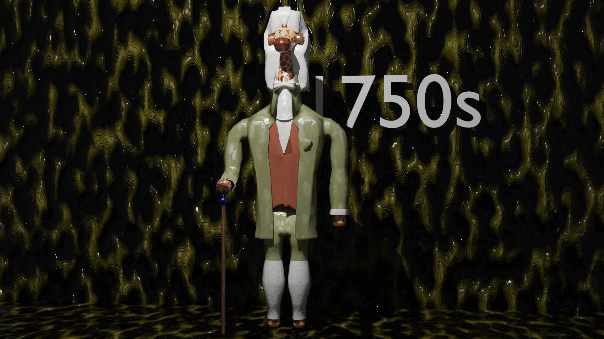

Les deux premiers mois de la troisième année étaient consacrés à un stage
professionnel chez un designer de notre choix. J’ai choisi Jeanne Julien,
créatrice de mobilier d’exception. J’ai produit pour elles des mascottes
en 3D représentant une de ses créations, Rodolfo Dido, qui est un sofa-giraffe.
J’ai réalisé 5 variations de cette mascotte dans Blender dans 5 styles et époques différents.